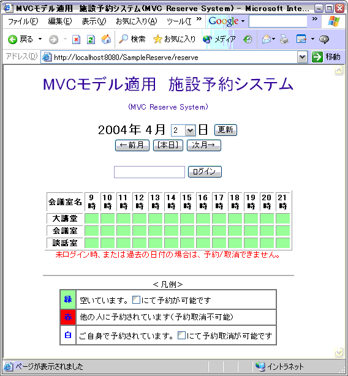
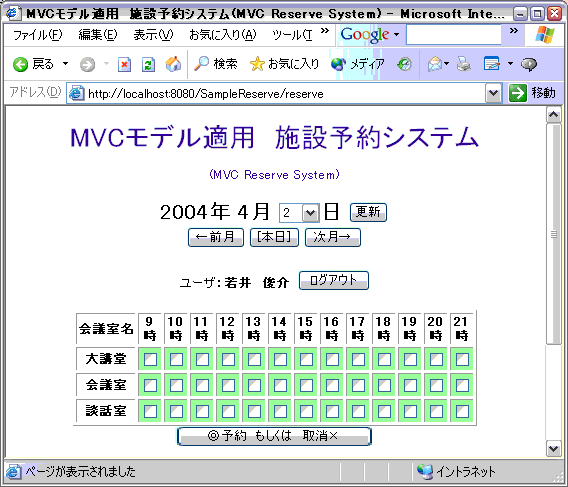
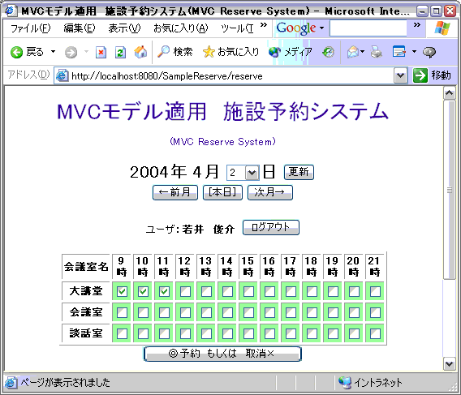
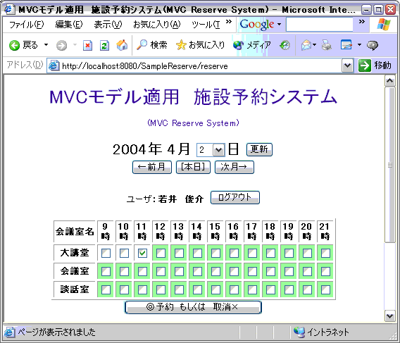
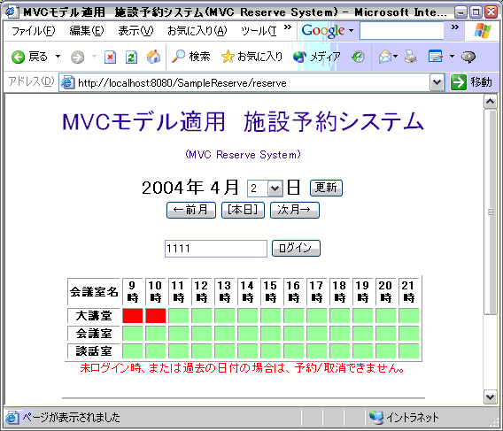
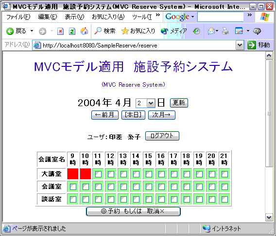
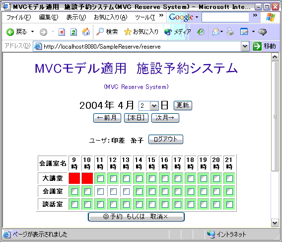
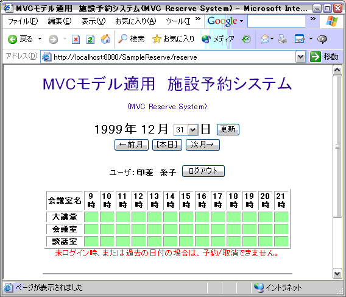

初期画面です。
社員番号を入力して、ログインボタンを押下します。 社員番号はデータベースで社員情報テーブルから照会します。

ログインしました。
施設を予約可能な表示になります。

大講堂を9時から12時まで予約しようとチェックをつけ、 予約ボタンを押下します。
予約を完了しました。

実のところ、大講堂は２時間で済むので、11時のは取り消すことにしました。 予約取消ボタンを押下します。
意図したとおりに予約が出来ました。ログアウトボタンを押下します。

ログアウトしました。
若井社員のPC上では、若井社員の社員番号「0106」が残っています。

印差社員も、自分のPC上で予約をしてみたいと思います。 印差社員の社員番号は「1111」です。

印差社員もログインしました。
すでに大講堂は他の社員（＝若井社員）によって9時から10時まで予約が取られています。
印差社員は会議室を利用することにします。

印差社員が予約した部分は、印差社員のみ予約取り消しは出来ますが、
他者の予約した部分は取消すことは出来ません。

過去の日付(1999年になってます)の予約は出来ません。意味がないからです。
ただしそれでも表示のみは出来ます。過去の予約状況を確認したい場合に対応してます。